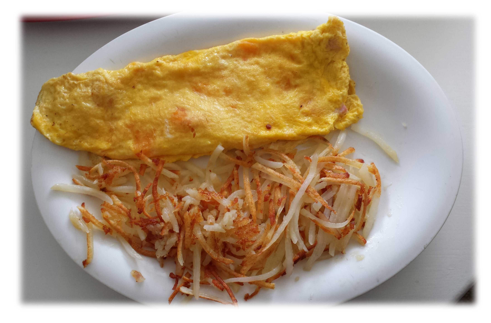

Eggs n' Such
Served with fresh eggs, hashbrown or home fried potatoes, and our famous homemade toast.
| Two Eggs | 4.75 |
| Bacon or Sausage & Eggs | 5.95 |
| Ham or Jalapeno Bacon & Eggs | 6.50 |
| Corned Beef & Eggs | 5.95 |
| Pork Chop & Eggs | 6.50 |
| Diced Bacon or Ham Scramble | 5.50 |
| Homemade German Sausage & Eggs | 6.95 |
| Chicken Fried Steak & Eggs | 6.95 |
Homemade Specialties
Breakfast Burrito -  Ham, scrambled eggs and onions, rolled in a tortilla and topped with our homemade pork green chili and cheese.
Served with your choice of breakfast potatoes or toast. 6.95 Half 5.95
Ham, scrambled eggs and onions, rolled in a tortilla and topped with our homemade pork green chili and cheese.
Served with your choice of breakfast potatoes or toast. 6.95 Half 5.95
Huevos Rancheros - Our homemade pork green chili and cheese, smothered atop a corn tortilla, refried beans and two eggs cooked the way you like! 4.95
The Mimi - One egg, breakfast potatoes, regular toast, and a choice of bacon or sausage. 4.50
Pancake Special - Two pancakes, one egg, and your choice of bacon or sausage. 4.95
French Toast Special -  Made from our homemade bread, served with one egg and choice of bacon or sausage. 4.50
Made from our homemade bread, served with one egg and choice of bacon or sausage. 4.50
Breakfast Sandwich - Egg, sausage patty and cheese, on an English Muffin, served with breakfast potatoes. 4.50 Put it on a bagel Add .50
Farmer's Breakfast - Biscuits, scrambled eggs and hashbrowns, smothered in out sausage gravy. 6.95 Half 5.95
Omelets
Three egg omelets, accompanied by your choice of breakfast potatoes and toast.
Cheddar Cheese - Simple, yet loaded with cheese! 5.75
Spanish - A south of the border favorite! 7.00
Denver - Born and bred right here in Colorado!!! 6.50
B-Y-O-O
Build your own omelet from the following popular choices!
|
|
|
Two Choices - 6.25
Three Choices - 6.95
Favorite Creations
| Freshly Made Biscuits and Sausage Gravy | 4.25 Half 3.25 |
| Homemade Cinnamon Roll | 2.75 |
| Pancake Full Stack | 4.25 |
| Pancake Short Stack | 3.25 |
| Pancake Single Flat | 2.25 |
| Add blueberries/chocolate chips to any stack | 2.00 |
| Bagel and Cream Cheese | 1.95 |